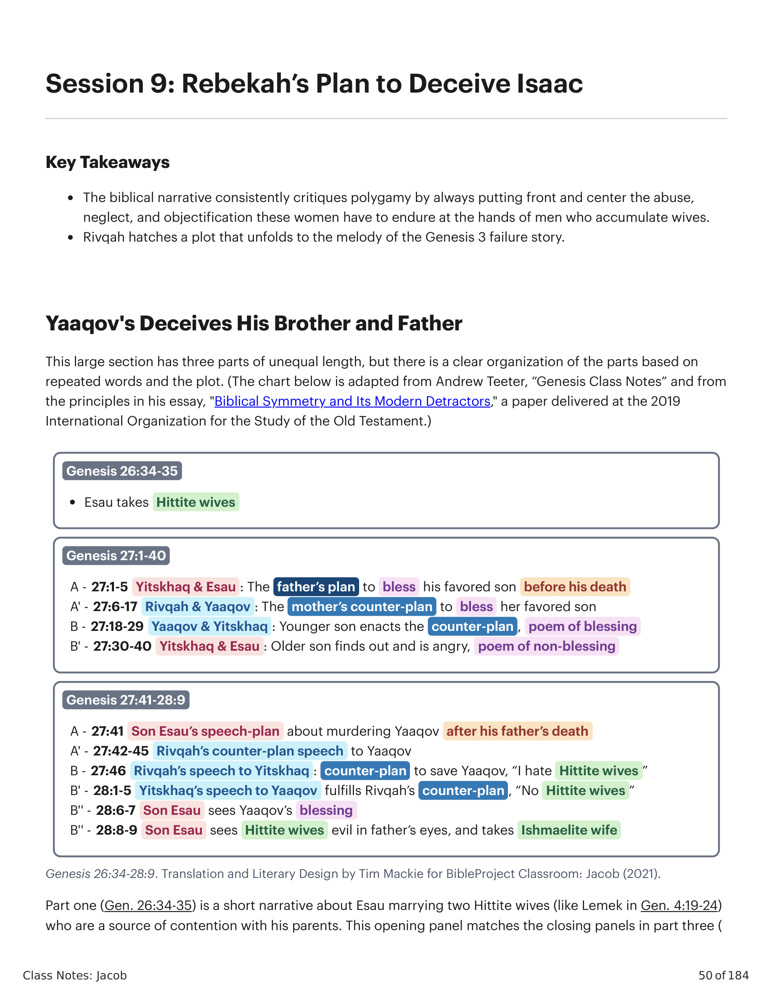
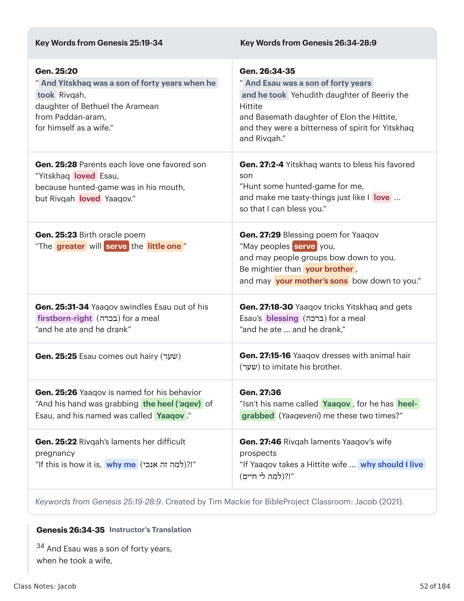
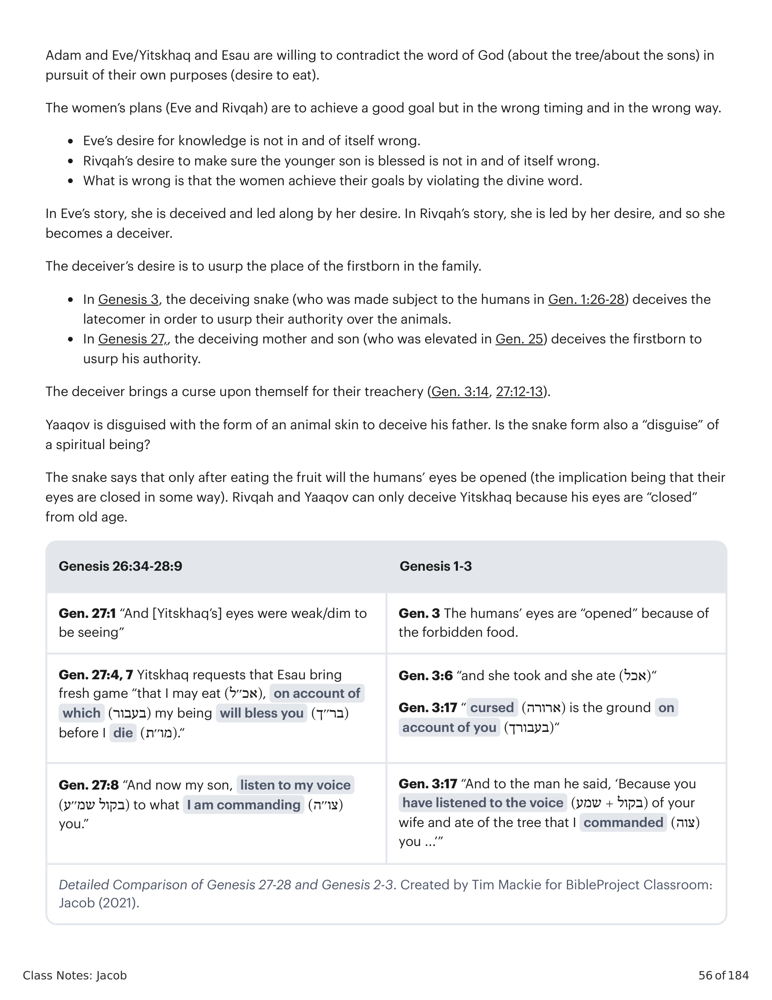
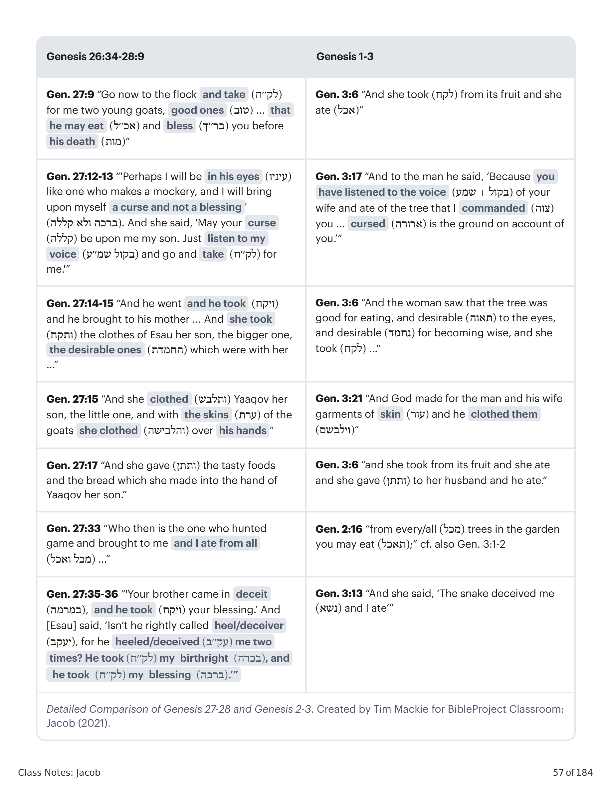

Esta grande seção tem três partes de extensão desigual, mas há uma clara organização das partes baseada em palavras repetidas e no enredo. A parte um (Gn 26:34-35) é uma narrativa curta sobre Esaú se casando com duas esposas hititas (como Lemek em Gn 4:19-24) que são uma fonte de contenda com seus pais. Este painel de abertura corresponde aos painéis de fechamento na parte três (Gn 27:41-28:9).This large section has three parts of unequal length, but there is a clear organization of the parts based on repeated words and the plot. Part one (Gen. 26:34-35) is a short narrative about Esau marrying two Hittite wives (like Lemek in Gen. 4:19-24) who are a source of contention with his parents. This opening panel matches the closing panels in part three (Genesis 27:41-28:9).

Gênesis 26:34-28:9. Tradução e Design Literário por Tim Mackie para BibleProject Classroom: Jacó (2021).Genesis 26:34-28:9. Translation and Literary Design by Tim Mackie for BibleProject Classroom: Jacob (2021).
As partes internas são unidas por dois ciclos simétricos de planos e contraplanos enganosos: (1) Ciclo do Engano 1 (27:1-40): Yitskhaq planeja egoistamente passar a bênção divina a Esaú em troca de sua caça favorita, embora o oráculo de nascimento dos meninos dissesse claramente que o mais velho seria subserviente ao mais novo (Gn 25:23). Rivqah concebe um contraplano para obter a bênção para seu filho favorito. (2) Ciclo do Engano 2 (27:41-28:5): Esaú planeja murderar seu irmão enganador por ter roubado seu direito de primogenitura e sua bênção. Rivqah concebe um contraplano para salvar a vida de seu filho, o que requer enviá-lo ao exílio para a família de seu irmão na Mesopotâmia.The inner parts are bound together by two symmetrical cycles of plans and deceptive counterplans. (1) Deception Cycle 1 (27:1-40): Yitskhaq selfishly plans to pass the divine blessing on to Esau in exchange for his favorite venison, even though the boys' birth oracle clearly stated that the older would be subservient to the younger (Gen. 25:23). Rivqah concocts a counterplan to obtain the blessing for her favorite son. (2) Deception Cycle 2 (27:41-28:5): Esau plans to murder his deceptive brother for stealing his firstborn right and his blessing. Rivqah concocts a counterplan to save her son's life, which requires sending him into exile to her brother's family in Mesopotamia.

Palavras-chave de Gênesis 25:19-28:9. Criado por Tim Mackie para BibleProject Classroom: Jacó (2021).Keywords from Genesis 25:19-28:9. Created by Tim Mackie for BibleProject Classroom: Jacob (2021).
34 E Esaú era um filho de quarenta anos, quando tomou uma esposa, Yehudith, filha de Beeri, o hitita, e Basemate, filha de Elom, o hitita, 35 e elas foram uma amargura de espírito para Isaque e Rebeca.34 And Esau was a son of forty years, when he took a wife, Judith, daughter of Beeri the Hittite, and Basemath, daughter of Elon the Hittite, 35 and they were a bitterness of spirit for Isaac and Rebekah.
Esta narrativa curta sobre as esposas de Esaú corresponde ao painel de conclusão desta seção da história de Yaaqov em Gênesis 27:41-28:9, que também foca nas esposas de Yaaqov e Esaú. Esaú é posto em analogia com a linhagem não-escolhida de Cainã que culminou na sétima geração de Adão e Eva, Lemek. Lemek é a primeira figura na história da Bíblia a tomar duas esposas (Gn 4:19), o que desvia do retrato ideal de Adão e Eva no Éden (Gn 2:24). É irônico que Esaú se casou com uma cananita chamada Yehudith ("Mulher de Judá")!This short narrative about Esau's wives matches the concluding panel of this section of the Yaaqov story in Genesis 27:41-28:9, which also focuses on Yaaqov and Esau's wives. Esau is set on analogy with the non-chosen lineage of Cain that culminated in the seventh generation from Adam and Eve, Lemek. Lemek is the first figure in the story of the Bible to take two wives (Gen. 4:19), which deviates from the ideal portrait of Adam and Eve in Eden (Gen. 2:24). It is surely ironic that Esau married a Canaanite woman named Yehudith ("Woman of Judah")!
1 E aconteceu que, quando Yitskhaq era velho, e seus olhos se tornaram fracos, chamou Esaú seu filho, o mais velho, e disse-lhe: "Meu filho!" E ele lhe disse: "Eis-me aqui." 2 E disse: "Eis que sou velho. Não sei o dia da minha morte. 3 Agora, pois, pega tuas ferramentas e tua aljava e teu arco, e sai ao campo, e caça para mim caça, 4 e faze-me guisados como eu amo, e traze-os a mim para que eu coma, para que minha vida possa abençoar-te antes que eu morra." 5 Ora, Rivqah estava escutando enquanto Yitskhaq falava a Esaú seu filho. 6 E Rivqah disse a Yaaqov seu filho: "Eis que ouvi teu pai falando a Esaú teu irmão, dizendo: 'Traze-me caça, e faze-me guisados, para que eu coma e possa abençoar-te perante Yahweh antes da minha morte.'" 8 "Agora, pois, meu filho, ouve a minha voz, àquilo que te ordeno: 9 Vai agora ao rebanho, e toma para mim de lá dois cabritos, bons, e farei deles guisados para teu pai, como ele ama, 10 e levá-los-ás a teu pai, e ele comerá, pelo que ele te abençoará antes da sua morte." 11 E Yaaqov disse a Rivqah sua mãe: "Eis que Esaú meu irmão é homem cabeludo, e eu sou homem liso. 12 Talvez meu pai me apalpe, e serei aos seus olhos como enganador, e trarei sobre mim maldição e não bênção." 13 E sua mãe lhe disse: "Sobre mim seja tua maldição, meu filho. Contudo, ouve a minha voz, e vai, toma para mim!" 14 E ele foi e tomou e trouxe a sua mãe, e sua mãe fez guisados como seu pai amava. 15 E Rivqah tomou as vestes de seu filho, o mais velho, as desejáveis que estavam com ela na casa, e vestiu Yaaqov seu filho, o menor, 16 e as peles dos cabritos pôs sobre suas mãos, e sobre a lisura de seu pescoço. 17 E deu os guisados e o pão que fizera na mão de Yaaqov seu filho.1 And it came about when Yitskhaq was old, and his eyes became weak, and he called Esau his son, his big one, and he said to him, "My son!" And he said to him, "Look, it's me." 2 And he said, "Look, I am old. I do not know the day of my death. 3 And now, please lift up your tools and your quiver and your bow, and go out to the field, and hunt for me hunted-game, 4 and make for me tasty-things just as I love, and bring it to me so I may eat, on account of which my being can bless you before I die." 5 Now, Rivqah was listening as Yitskhaq spoke to Esau his son, and Esau went to the field to hunt hunted-game to bring. 6 But Rivqah said to Yaaqov her son, saying, "Look, I have listened to your father speaking to Esau your brother, saying, 'Bring to me hunted-game, and make for me tasty-things, so I can eat and so I can bless you before Yahweh before my death.'" 8 So now, my son, listen to my voice, to what I am commanding you: 9 Please go to the flock, and take for me from there two kids of goats, good ones, and I will make them as tasty-things for your father, just as he loves, 10 and you will bring them to your father, and he will eat, on account of which he will bless you before his death." 11 And Yaaqov said to Rivqah his mother, "Look, Esau my brother is a man of hair, and I am a man of smoothness. 12 Perhaps my father will feel me, and I will be like a deceiver in his eyes, and I will bring upon myself a curse and not a blessing." 13 And his mother said to him, "May your curse be upon me, my son. However, listen to my voice, and go, take for me!" 14 And he went and he took, and he brought to his mother, and his mother made tasty-things just as his father loved. 15 And Rivqah took the clothes of her son, the bigger one, the desirable ones that were with her in the house, and she clothed Yaaqov her son, the smaller one, 16 and the skins of the kids of goats she clothed upon his hands, and upon the smoothness of his neck. 17 And she gave the tasty things and the bread which she made into the hand of Yaaqov her son.
Assim como o apetite de Esaú o sobrepujou e o levou a trocar tolamente seu bekorah ("direito de primogenitura") por uma tigela de comida, agora Yitskhaq dará a berakah de Deus ao filho que Deus não escolheu. Todos os motivos nesta história são torcidos e voltados para si mesmos. Ninguém parece ciente de que a história da busca de Deus pela humanidade está em jogo aqui!Just as Esau's appetite overpowered him and drove him to foolishly trade his bekorah ("firstborn right") for a bowl of food, so now Yitskhaq will give away God's berakah to the son God didn't choose. Everyone's motives in this story are twisted and self-oriented. No one seems aware that the story of God's pursuit of humanity is at stake here!
Esta história está repleta do vocabulário da história da falha do Éden em Gênesis 2-3. Os itens-chave repetidos em ambas as histórias são: conhecimento e morte; homem e mulher (que são marido e mulher); olhos, ver, tomar, desejar, dar, comer; bênção, maldição; ouvir a voz. Adão e Eva/Yitskhaq e Esaú estão dispostos a contradizer a palavra de Deus em busca de seus próprios propósitos. Os planos das mulheres (Eva e Rivqah) buscam um objetivo bom, mas no tempo e modo errados. O que está errado é que as mulheres alcançam seus objetivos violando a palavra divina. Yaaqov está disfarçado com a forma de pele de animal para enganar seu pai. A serpente diz que só depois de comer o fruto os olhos dos humanos se abririam; Rivqah e Yaaqov só podem enganar Yitskhaq porque seus olhos estão "fechados" pela velhice.This story is riddled with the vocabulary of the Eden-failure story from Genesis 2-3. The key vocabulary items repeated in both stories are: Knowledge and death; Man and woman (who are husband and wife); Eyes, see, take, desire, give, eat; Blessing, curse; Listen to the voice. Adam and Eve/Yitskhaq and Esau are willing to contradict the word of God (about the tree/about the sons) in pursuit of their own purposes (desire to eat). The women's plans (Eve and Rivqah) are to achieve a good goal but in the wrong timing and in the wrong way. What is wrong is that the women achieve their goals by violating the divine word. Yaaqov is disguised with the form of an animal skin to deceive his father. The snake says that only after eating the fruit will the humans' eyes be opened; Rivqah and Yaaqov can only deceive Yitskhaq because his eyes are "closed" from old age.

Comparação Detalhada de Gênesis 27-28 e Gênesis 2-3. Criado por Tim Mackie para BibleProject Classroom: Jacó (2021).Detailed Comparison of Genesis 27-28 and Genesis 2-3. Created by Tim Mackie for BibleProject Classroom: Jacob (2021).

Comparação Detalhada de Gênesis 27-28 e Gênesis 2-3 (continuação). Criado por Tim Mackie para BibleProject Classroom: Jacó (2021).Detailed Comparison of Genesis 27-28 and Genesis 2-3 (continued). Created by Tim Mackie for BibleProject Classroom: Jacob (2021).
Como Gênesis 27:1-18 é uma meditação sobre filhos reencenando e intensificando as falhas de seus antepassados?How is Genesis 27:1-18 a meditation on children replaying and intensifying the failures of their ancestors?